黃仁勳Jensen Huang
NVIDIA 創辦人暨執行長
「你不會被 AI 搶走工作，但你會被懂得使用 AI 的人搶走工作。」
“You're not going to lose your job to an AI, but you're going to lose your job to someone who uses AI.”
Milken 全球會議・2025-05
8 個月，取得史丹佛大學、加州大學柏克萊分校、加州州立大學三校證書，把矽谷的 AI 決策思維帶回你的公司——不需離職、不需出國、免托福。
史丹佛大學·加州大學柏克萊分校·加州州立大學 三校學術資源
全球唯一整合美國三大名校資源的企業家《博士後暨訪問學者》進修計畫・亞洲唯一的美國三大名校合作碩士後發展班項目
2027 第 9 期｜12 人即開班・獎學金原則上僅適用 10 月底前送件 【待確認】獎學金名稱／金額
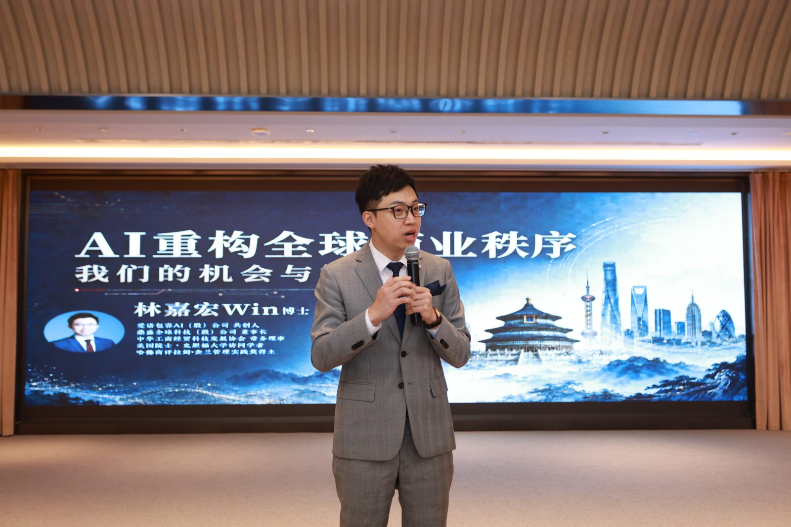
AI 讓知識變便宜，
讓判斷變昂貴。
碩士、EMBA 已成標配，你的名片要靠什麼和別人不一樣？
工具每週都在更新，但公司真正該從哪裡開始、投資什麼，沒有人給你答案。
最新的商業模式與資金流向，你總是最後一個知道。
公司離不開你，但你也不想跟世界頂尖學府擦身而過。
當 AI 能回答所有教科書問題，真正稀缺的是頂層決策視野與新興技術洞察。
「你不會被 AI 搶走工作，但你會被懂得使用 AI 的人搶走工作。」
“You're not going to lose your job to an AI, but you're going to lose your job to someone who uses AI.”
Milken 全球會議・2025-05

「如果現在要我對一群大學生說話，我會告訴他們：把這些 AI 工具練到極度、不可思議地熟練。」
“If I was to talk to a class of undergrads right now, I'd be telling them to get really, unbelievably proficient with these tools.”
世界經濟論壇達沃斯年會・2026-01

「重點不再是資淺或資深，而是『會用 AI』還是『不會用 AI』。」
“It's not about junior vs senior, it's about “good with AI” vs “not good with AI.”
X 貼文・2026-03-04
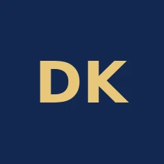
「學習讓你變得有用，也讓你得到想要的。『學會如何學習』、練習它、精通它，應該是第一優先。」
“Learning allows you to be useful and get what you want. It should be a top priority to learn how to learn, practice it, and master it.”
X 貼文・2025-07-17

「成功停在你不會的地方，所以學會自己想辦法，是最有價值的技能。」
“Success stops where you don't know how to do something. Which makes learning to figure it out the most valuable skill you can learn.”
X 貼文・2025-08-22
台灣唯一安排「美國產官學研界」參訪與交流。以下兩種行程分開報名。
美國矽谷研究院（SVRI）主辦的總裁研習認證班：史丹佛教授與矽谷企業領袖授課，主題涵蓋 AI 與前沿科技趨勢、Design Thinking 設計思維、創新領導與未來決策；含史丹佛校園參訪、Arrillaga Dining Commons 校園午餐、創業生態體驗與國際交流。【待確認】2027 日期與費用
每年 10 月底舉行，學員可赴美參加：史丹佛、柏克萊校園課程、產官學參訪交流、全球學術論壇成果發表與結業典禮（行程安排與費用另計）。
歡迎晚宴、學者與企業家破冰交流
開課典禮、高階領導力、AI 與未來商業模式
科技與投資研究、矽谷企業家私享晚宴
政府與企業政策解析 【待確認】市政廳
Apple Park、NVIDIA、Google、電腦歷史博物館 【待確認】
博士後與訪問學者專題發表、戰略圓桌
舊金山金融區論壇，賦歸


＊歷屆活動照片（取自華沃說明會頁）
＊實體校園班每年 10 月底舉行；實際行程依校方正式入學通知為準。
每期 12 人即開班、平均 15–20 位企業主同班；8 個月一起上課、做專題，結業後與教授、矽谷研究院及歷屆學員持續連結。
＊2025 招生影片中，Win 自述「過去 7 年間幫助數百位企業家學歷升級」【待確認】2027 更新數字


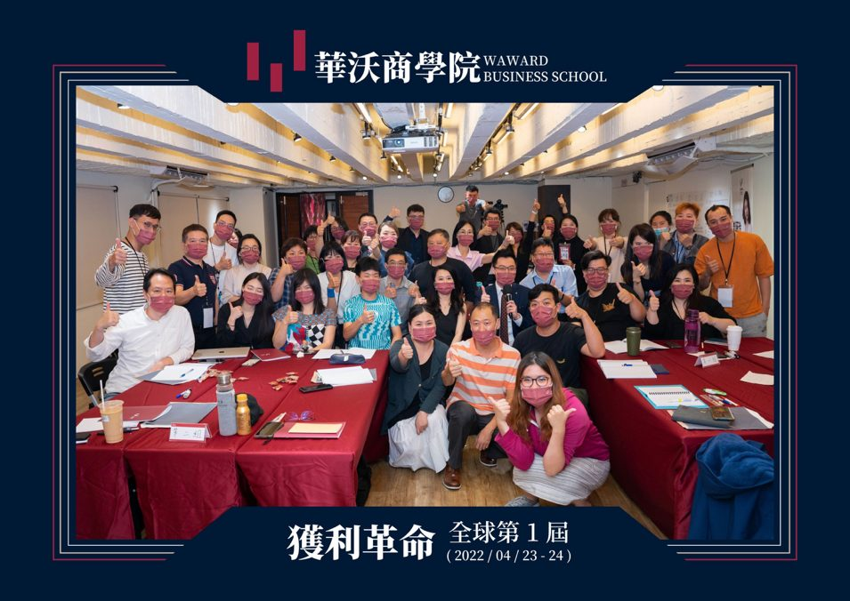
位於矽谷核心，孕育 Google、Yahoo 等企業，被稱為「矽谷的搖籃」。
全美頂尖公立研究型大學，在人工智慧、能源研究、公共政策領域具全球領先地位。
全美最大的公立大學系統（23 個校區），本計畫由蒙特雷灣分校 CSU Monterey Bay 參與授課，與加州產業高度結合。
本計畫承辦單位。與三校合作開設研究中心級專案，並邀請矽谷大型科技企業高層授課；同時舉辦全球學術論壇，提供學員發表舞台。
＊排名與數據請於上線前依最新 QS／U.S. News 更新。本頁不使用任何學校校徽或商標。
8 堂課由史丹佛、柏克萊、加州州立大學各派 2 位教授，另 2 堂由矽谷研究院邀請矽谷科技企業高層主講（過往曾邀請 NVIDIA 技術長 【待確認】可否露出）。
AI 導入路線圖、人機協作組織設計
AI 供應鏈與產業版圖重組
生成式 AI、AI Agent、算力與晶片
AI 驅動的行銷與客戶洞察
AI 法規、資料隱私與企業風險
用 AI 工具做研究與數據決策
＊AI 方向為建議主題 【待確認】2027 課綱；以上為主題方向；實際課程、講師與順序以校方正式入學通知為準。
從 AI 在企業管理中的應用、數據驅動決策、企業國際化策略等方向，結合自身產業。
課程含研究方法與學術期刊寫作，兼顧學術價值與商業應用。
於矽谷研究院全球學術論壇／專題研究發表會發表成果。
訪問學者與博士後學員，於結業後一年內發表國際期刊，可再取得加州州立大學頒發的第 4 張證書，論文題目將載於證書上。
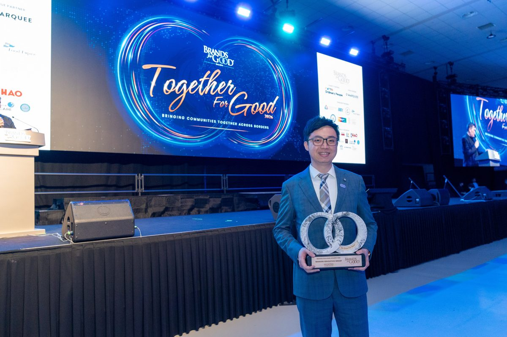
僅列部分師資，2027 年師資以校方公告為準。【待確認】名單與露名授權
Pegasus 創投合夥人，專注 AI、量子計算等深度科技投資；曾帶領 2 家公司上市。
宏觀經濟學家，柏克萊傑出教學獎得主，著有《宏觀經濟學作為第二語言》。
史丹佛法學博士，專研 AI 與法律；史丹佛醫學院 SPARK 創新計畫顧問。
講授「設計思維」，帶你理解矽谷產品創新的思考方式。
12 年 MBA 教學經驗，專精領導力發展、組織變革與競爭性行銷策略。
＊教授頭像待客戶提供授權照片後替換。
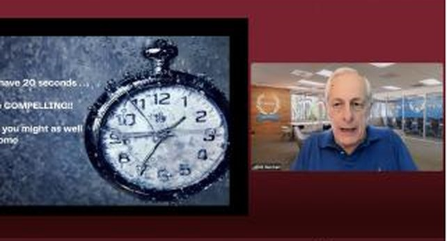
名額與獎學金以顧問一對一說明為準 【待確認】獎學金名稱／金額
書面審查，免筆試。本計畫為研究中心級國際進修專案（矽谷研究院與三校合作），所取得的是國際學術經歷，非正式學位。證書可辦理海牙或使館公證。
| 身份 | 申請資格 | 證書 |
|---|---|---|
| 訪問學者Visiting Scholar・推薦碩士以上 | 碩士學位 | 三校證書 3 張＋期刊發表後第 4 張 |
| 博士後研究Postdoctoral Research | 博士學位 | 三校證書 3 張＋期刊發表後第 4 張 |
| EDP 總裁班Executive Development Program | 大專學歷＋工作經歷 | 三校證書 3 張 |
＊另有碩士後（需碩士學位、3 張證書），建議碩士以上者優先申請訪問學者。未發表期刊者，結業後仍先取得 3 張證書。
＊示意圖，非實際證書樣式 【待客戶提供】高解析證書樣本圖
若你同時需要可列入「學歷」的正式學位，可搭配美國瑪麗伍德大學（Marywood University）線上 EMBA／MBA：台灣線上上課，最快一年取得碩士，與美國三校訪問學者專案同步進行、同步結業。
美國三校 × 瑪麗伍德
組合方案內容、學費與證書發放時程由國際招生顧問一對一說明。
【待確認】是否公開組合方案
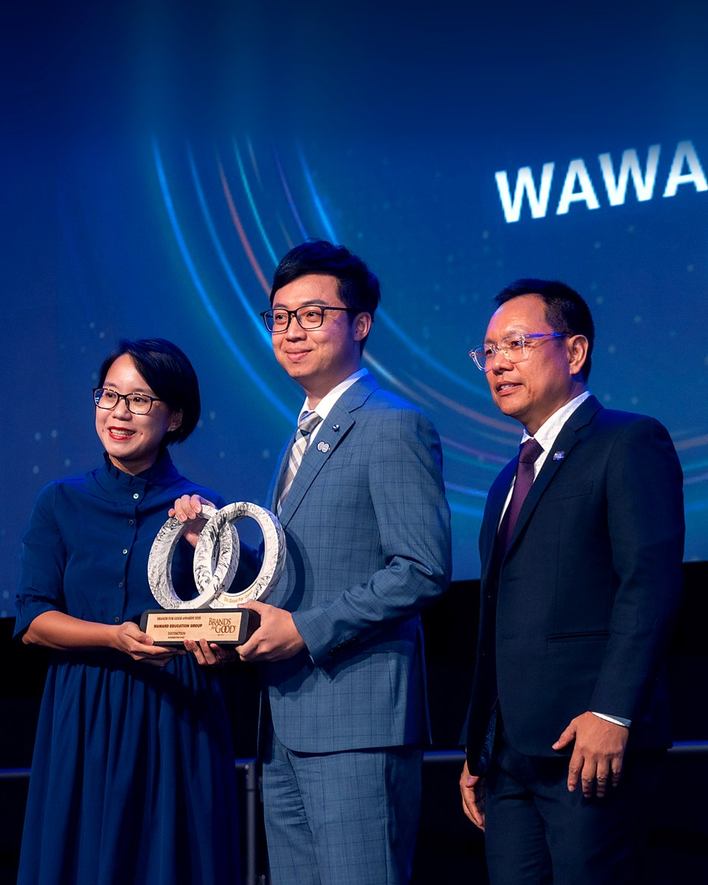
「世界之大，
歡迎你出海。」
林嘉宏 Win華沃教育創辦人
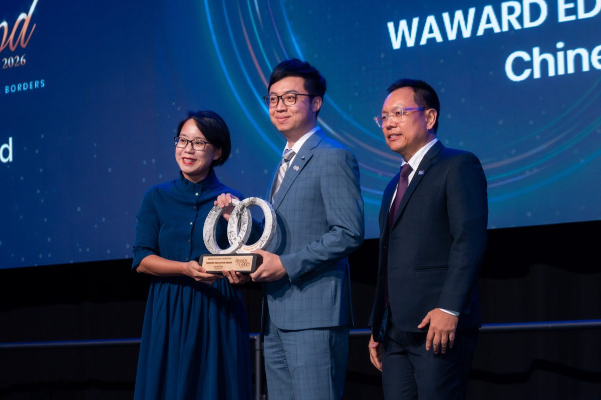
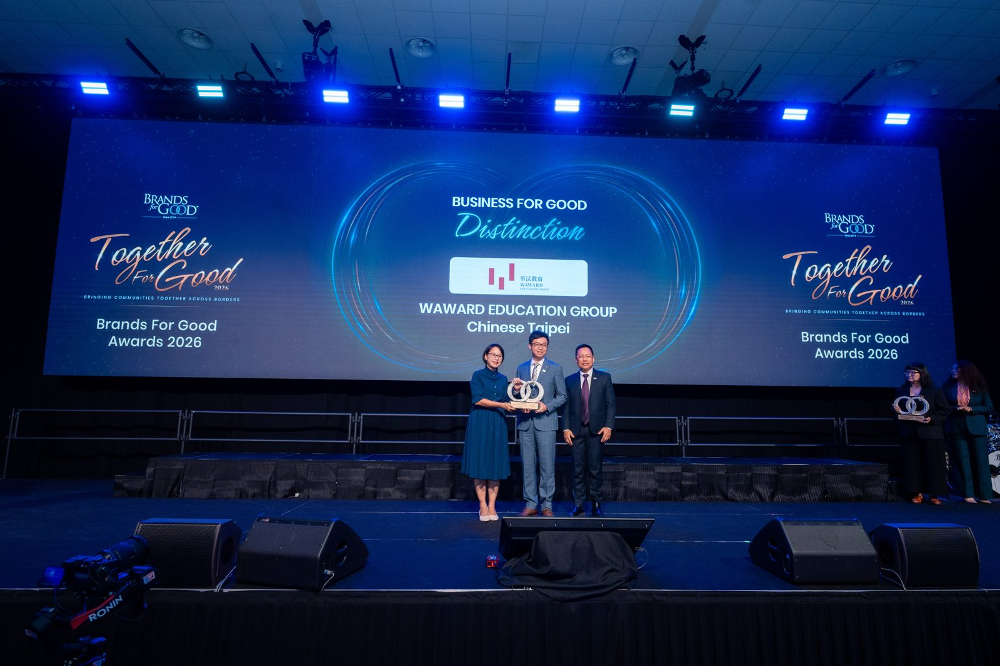
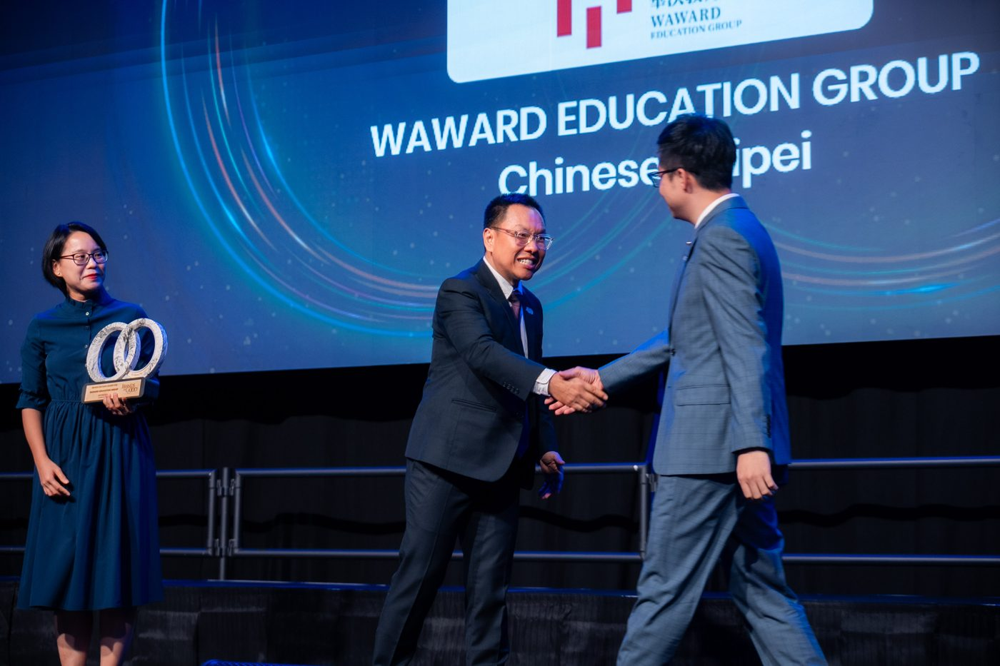
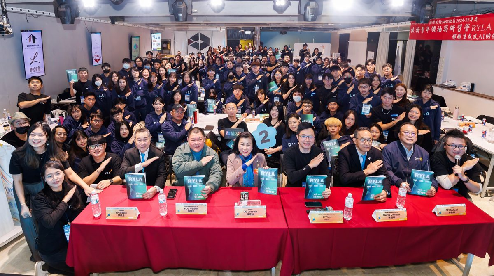
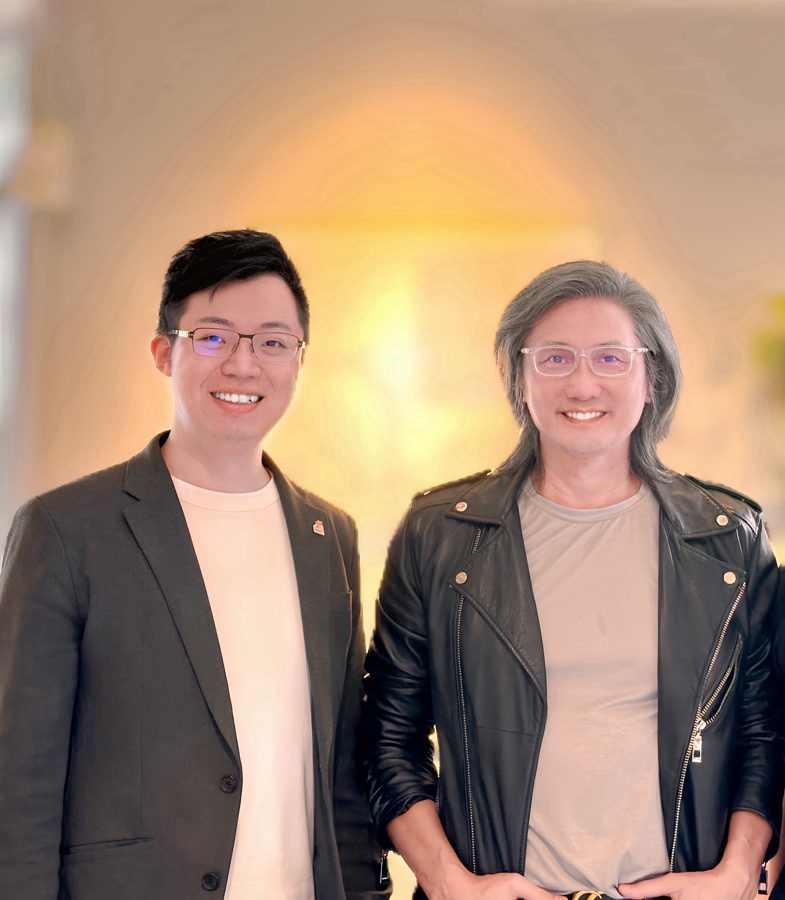
| 正規學位 MBA／EMBA／DBA | 本計畫 | |
|---|---|---|
| 定位 | 學術導向，完整學位學程 | 產業實務導向，AI 專題＋國際學術經歷 |
| 時間 | 2–4 年以上 | 8 個月或 1 週 |
| 門檻 | 入學考試、英文門檻 | 職業成就、書面審查 |
| 價值 | 學歷文憑（列學歷） | 頭銜認可、教授資源、國際人脈（列經歷） |
可以。本計畫專為企業主、高管、創業家與專業人士設計，研究題目直接結合你的企業營運，由教授與商業導師陪你完成。
可以，例如 AI 在企業管理中的應用、數據驅動決策、企業國際化策略。學期間可預約教授一對一指導。
可以。專題聚焦在經營決策與組織應用，不需要寫程式。【待確認】
不是。訪問學者、博士後研究、EDP 總裁班屬於國際學術經歷，應列在「經歷」；正式學位僅限學士、碩士、博士。若需要學位，可搭配瑪麗伍德大學線上碩士同步進行。
具碩士以上學歷者，我們建議訪問學者：在學術體系中，訪問學者通常是副教授以上才申請的身份，國際影響力更高。具博士學位者兩者皆可申請。
不一定。結業後即先取得 3 張證書；訪問學者與博士後學員若於結業後一年內發表國際期刊，可再取得第 4 張證書。
一樣，證書上不會有「網路班」字樣。
可辦理海牙或使館公證（費用請洽顧問）。
送件時繳交申請費 NT$8,000；台灣初審未通過者，申請費恕不退還。初審通過後簽約並繳納全額學費，再送美國審核；若美方審核未通過，學費全額退還（申請費不退）。學費含課程、學術指導與證書；實體班另含企業參訪、住宿與課程期間餐飲。【待確認】2027 學費
有。獎學金名額有限，原則上僅適用於 10 月底前完成申請者，網路直播班可折抵部分學費。【待確認】2027 金額
中英雙語授課，加上即時翻譯，免語言成績。
＊申請費 NT$8,000 於任何審核結果皆不退還；學費僅於美方審核未通過時全額退還。
留下資料，國際招生顧問將與你聯繫，提供學費、獎學金（10 月底前送件適用）與說明會場次資訊。
【待確認】表單串接／LINE 官方帳號